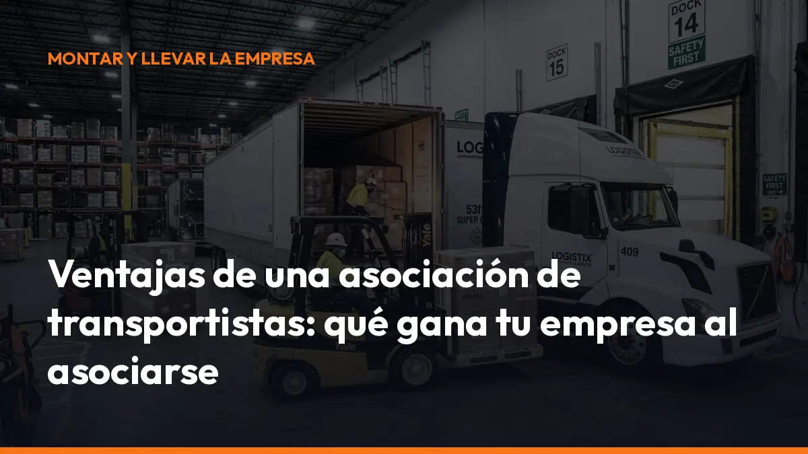

Ventajas de una asociación de transportistas: qué gana tu empresa al asociarse

Una asociación de transportistas reúne a empresas, autónomos y profesionales del transporte para defender intereses comunes, compartir información y conseguir servicios en mejores condiciones.
¿El resultado? Más capacidad de negociación, más seguridad jurídica y menos tiempo dedicado a resolver problemas administrativos.
Si diriges una empresa de transporte o trabajas como autónomo, estas son las principales ventajas de pertenecer a una asociación de transportistas.
1. Gana voz ante la Administración
Una empresa individual puede presentar alegaciones o solicitar información. Sin embargo, una asociación representa a cientos o miles de profesionales con una posición común.
Ese peso resulta especialmente importante cuando se modifican:
- Masas y dimensiones de los vehículos.
- Tiempos de conducción y descanso.
- Autorizaciones de transporte.
- Normativa laboral y de cotización.
- Peajes, restricciones y zonas de circulación.
- Contratos, tarifas y condiciones de pago.
Las asociaciones actúan como interlocutores ante el Ministerio de Transportes, la Dirección General de Tráfico y otras administraciones. El Comité Nacional del Transporte por Carretera (CNTC) es el cauce de participación integrada del sector en las actuaciones públicas que afectan de forma general o relevante al transporte.
Un ejemplo claro: las 44 toneladas
La ampliación de las masas máximas autorizadas hasta 44 toneladas no apareció de forma aislada. Su desarrollo estuvo relacionado con acuerdos entre el sector, representado a través del CNTC, y la Administración.
La Orden PJC/780/2025 modificó varios anexos del Reglamento General de Vehículos, incluido el Anexo IX, relativo a masas y dimensiones.
Desde el 23 de octubre de 2025, determinados conjuntos de cinco o más ejes pueden acogerse a la MMA de 44 toneladas. En el caso de las cisternas, la aplicación correspondiente comenzó el 23 de enero de 2026, siempre que se cumplan las condiciones técnicas y de distribución de masas.
La asociación te ayuda a entender una cuestión esencial:
- Qué vehículos pueden utilizar las 44 toneladas.
- Qué masa máxima técnicamente admisible figura en la ficha técnica.
- Qué límites corresponden a cada eje.
- Qué configuraciones quedan fuera.
- Cómo aplicar correctamente el cambio en tu operativa.
No te quedes con titulares incompletos. Consulta la información de tu asociación y revisa también las aclaraciones publicadas por la DGT sobre el Anexo IX.
Asóciate y recibe una interpretación práctica de cada cambio antes de tomar decisiones sobre tu flota.
2. Defiende tus intereses y mejora tu capacidad de negociación
Una asociación no solo informa. También defiende las condiciones económicas y profesionales del sector.
El transporte soporta costes elevados y variables:
- Combustible.
- Seguros.
- Neumáticos.
- Reparaciones.
- Peajes.
- Personal.
- Financiación.
- Impuestos.
- Mantenimiento de vehículos.
Cuando negocias de manera individual, tu capacidad para conseguir mejores condiciones es limitada. Cuando negocias junto a muchos transportistas, la situación cambia.
La asociación puede participar en conversaciones sobre:
- Precios y costes del transporte.
- Plazos de pago.
- Cláusulas de revisión por combustible.
- Condiciones de carga y descarga.
- Responsabilidad por daños o retrasos.
- Restricciones a la circulación.
- Medidas de apoyo para autónomos y pequeñas empresas.
Tú sigues tomando tus propias decisiones. Pero cuentas con una estructura que defiende el interés común y traslada tus problemas a los organismos adecuados.
3. Obtén asesoramiento jurídico y normativo especializado
La legislación del transporte cambia continuamente. Además, no basta con conocer el nombre de una norma. Debes saber cómo aplicarla en una ruta, en una inspección o en un contrato.
Una asociación de transportistas suele ofrecer asesoramiento sobre:
- LOTT y ROTT.
- Autorizaciones de transporte.
- Contratos y cartas de porte.
- Tiempos de conducción y descanso.
- Tacógrafo y registros.
- Estiba y sujeción de cargas.
- Transporte internacional.
- ADR y mercancías peligrosas.
- Sanciones administrativas.
- Reclamaciones por impago.
- Juntas Arbitrales de Transporte.
Ese apoyo puede marcar la diferencia entre corregir un error a tiempo o enfrentarte a una sanción, una reclamación o una pérdida económica.
Antes de firmar un contrato, responder a una inspección o aceptar una carga con condiciones dudosas, consulta.
Una llamada a tu asociación puede ahorrarte horas de gestión y evitar una decisión costosa.
Además, puedes reducir la carga documental de tu empresa con herramientas como Mi Carga, que te permite generar documentos de control y cartas de porte digitales desde el móvil.
4. Fórmate y mantén tus certificados al día
La formación obligatoria no termina cuando obtienes el permiso de conducir.
El sector exige renovación y actualización constante. Por eso, muchas asociaciones organizan o facilitan cursos de:
- CAP inicial y renovación.
- ADR básico y especialidades.
- Consejero de seguridad.
- Tacógrafo.
- Estiba y sujeción de cargas.
- Prevención de riesgos laborales.
- Gestión de empresas de transporte.
- Normativa nacional e internacional.
- Digitalización y gestión de flotas.
Para un autónomo, acceder a formación a través de una asociación suele ser más sencillo y económico que buscar cada curso por separado. También puedes recibir avisos sobre plazos de renovación, convocatorias, cambios de examen y documentación necesaria.
No esperes a que caduque tu CAP o tu ADR. Pregunta por el calendario formativo de tu asociación y reserva tu plaza con tiempo.
Si trabajas con mercancías peligrosas, recuerda que el ADR exige requisitos específicos. En Mi Carga también puedes consultar nuestro servicio de consejero de seguridad ADR.
5. Accede a descuentos en combustible, seguros y neumáticos
Una de las ventajas más visibles de una asociación de transportistas es el acceso a acuerdos colectivos.
Los convenios pueden incluir condiciones especiales en:
Combustible
El gasóleo representa una parte importante del coste de cada ruta. Una tarjeta de combustible con tarifa negociada puede ayudarte a controlar el gasto y centralizar las facturas.
Seguros
Puedes encontrar acuerdos para seguros de:
- Camión y semirremolque.
- Responsabilidad civil.
- Mercancías.
- Flotas.
- Accidentes.
- Defensa jurídica.
Neumáticos y mantenimiento
Las asociaciones también pueden negociar precios en talleres, neumáticos, recambios, revisiones y servicios de asistencia.
Tecnología y servicios profesionales
Algunos acuerdos incluyen descuentos en:
- Software de gestión.
- Telefonía.
- GPS y localización.
- Aparcamientos.
- Renting.
- Renting de vehículos.
- Gestorías.
- Servicios de prevención.
Compara siempre las condiciones. El precio final depende del proveedor, el volumen, la provincia y el tipo de vehículo. Pero como asociado partes de una posición mucho más favorable.
Solicita la lista de acuerdos y calcula cuánto puedes ahorrar al año.
6. El autónomo también tiene peso
Las asociaciones no son solo para grandes flotas.
El autónomo representa una parte esencial del transporte por carretera. Con un solo camión, afrontas prácticamente las mismas obligaciones que una empresa de mayor tamaño:
- Control documental.
- Inspecciones.
- Mantenimiento.
- Seguros.
- Formación.
- Impuestos.
- Contratos.
- Cobros.
- Cumplimiento normativo.
La diferencia es que muchas veces debes gestionar todo mientras conduces.
Pertenecer a una asociación te permite contar con:
- Información sectorial resumida y actualizada.
- Asesoramiento especializado.
- Apoyo ante sanciones o reclamaciones.
- Acceso a cursos y descuentos.
- Contacto con otros profesionales.
- Mayor capacidad de negociación.
También puedes crear una red de colaboración con otros transportistas, compartir experiencias y detectar oportunidades que no encontrarías trabajando de forma aislada.
7. Recibe información antes de que el cambio te afecte
La información rápida tiene un valor directo en carretera.
Una asociación puede avisarte de:
- Nuevas restricciones de circulación.
- Cambios en peajes.
- Cortes y desvíos.
- Modificaciones normativas.
- Convocatorias de ayudas.
- Inspecciones específicas.
- Nuevos requisitos documentales.
- Fechas de renovación.
- Riesgos detectados en el sector.
Recibir la información con antelación te permite adaptar rutas, preparar documentos y evitar decisiones improvisadas.
En un sector donde una norma puede entrar en vigor en pocas semanas, esperar a enterarte por terceros es una mala estrategia.
Suscríbete a los boletines, activa las alertas y consulta las comunicaciones de tu asociación.
Asociación de transportistas o cooperativa: no es lo mismo
Conviene diferenciar ambos modelos.
Una asociación defiende intereses comunes, ofrece servicios, representa al sector y facilita asesoramiento, formación y acuerdos.
Una cooperativa de transportistas puede tener además una estructura empresarial compartida para organizar cargas, facturación, compras o prestación de servicios.
Antes de incorporarte, revisa:
- Cuota de alta y cuota mensual.
- Servicios incluidos.
- Condiciones de permanencia.
- Cobertura jurídica.
- Acuerdos comerciales.
- Formación disponible.
- Atención al autónomo.
- Representación ante la Administración.
Elige la opción que encaje con tu actividad. No pagues por servicios que no vas a utilizar y exige condiciones transparentes.
¿Merece la pena asociarse?
En la mayoría de los casos, sí, especialmente si eres autónomo o diriges una pequeña empresa.
La cuota debe compararse con el valor que recibes:
- Una consulta jurídica.
- Un curso subvencionado.
- Un descuento en combustible.
- Una reclamación gestionada.
- Un aviso normativo a tiempo.
- Una sanción evitada.
- Un seguro mejor negociado.
No se trata solo de ahorrar dinero. También se trata de trabajar con más seguridad, entender las obligaciones y tener respaldo cuando surge un problema.
Mientras tu asociación defiende tus intereses, digitaliza también la gestión diaria. Con Mi Carga puedes generar documentos de control y cartas de porte desde el móvil, guardar los PDF en la nube y mostrar el código QR durante un control.
Tienes 10 transportes de prueba gratis, sin tarjeta y sin compromiso. Después puedes utilizar documentos ilimitados por 10 €/mes + IVA o 90 €/año + IVA. Consulta los planes de Mi Carga o solicita un presupuesto para tu empresa.
Empieza hoy con más respaldo
Una asociación de transportistas te ayuda a:
- Defender mejor tus intereses.
- Entender la normativa.
- Adaptarte a cambios como las 44 toneladas.
- Acceder a formación especializada.
- Negociar descuentos.
- Resolver problemas jurídicos.
- Recibir información antes.
- Dar más fuerza a tu voz como autónomo.
No esperes a tener una sanción, un conflicto contractual o una nueva obligación para buscar apoyo.
Localiza una asociación de tu zona, solicita información sobre sus servicios y compara las condiciones. Después, completa tu gestión documental con Mi Carga y genera tus primeros 10 portes gratis.
¿Hablamos? Empieza ahora sin coste o escríbenos por WhatsApp.
Genera tus 10 primeros documentos gratis con Mi Carga
DeCA, carta de porte y ADR, en PDF, con QR y archivo automático en la nube.
Empezar con 10 documentos gratisArtículo informativo. Consulta siempre el caso concreto de tu operación. ¿Dudas? Escríbenos.